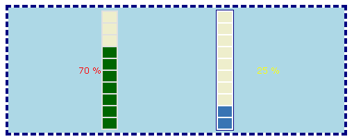

Using Progress Observers
Basic Observer
If you creates an instance HTML_Progress_Observer class without
subclass, then default behaviour is to to write events (setminimum, setmaximum, setvalue)
into a file progress_observer.log in current directory.
This file contains for each event observed a PHP serialize (http://www.php.net/manual/en/function.serialize.php)
output result.
Basic Observer
- <?php
- require_once 'HTML/Progress.php';
- require_once 'HTML/Progress/observer.php';
-
-
- $bar = new HTML_Progress();
- $bar->setAnimSpeed(100);
- $bar->setBorderPainted(true);
- $bar->setIncrement(10);
-
- $observer = new HTML_Progress_Observer();
-
- $ok = $bar->addListener($observer);
- if (!$ok) {
- die ("Cannot add a valid listener to progress bar !");
- }
-
- $ui =& $bar->getUI();
- // border: 2px, solid, #000000
- $ui->setBorderAttributes('width = 2');
-
- $ui->setComment('Standard Observer ProgressBar example');
-
- ?>
- <!DOCTYPE html
- PUBLIC "-//W3C//DTD XHTML 1.0 Strict//EN"
- "http://www.w3c.org/TR/xhtml1/DTD/xhtml1-strict.dtd">
-
- <html xmlns="http://www.w3.org/1999/xhtml" xml:lang="en">
- <head>
- <title>Standard Observer </title>
- <style type="text/css">
- <!--
- <?php echo $bar->getStyle(); ?>
-
- body {
- background-color: #FFFFFF;
- color: #000000;
- font-family: Verdana, Arial;
- }
- // -->
- </style>
- <script type="text/javascript">
- <!--
- <?php echo $bar->getScript(); ?>
- //-->
- </script>
- </head>
- <body>
-
- <?php
- echo $bar->toHTML();
- $bar->run();
- ?>
-
- </body>
- </html>
Example above produces such results:
a:2:{s:3:"log";s:8:"incValue";s:5:"value";i:10;}
a:2:{s:3:"log";s:8:"incValue";s:5:"value";i:20;}
a:2:{s:3:"log";s:8:"incValue";s:5:"value";i:30;}
a:2:{s:3:"log";s:8:"incValue";s:5:"value";i:40;}
a:2:{s:3:"log";s:8:"incValue";s:5:"value";i:50;}
a:2:{s:3:"log";s:8:"incValue";s:5:"value";i:60;}
a:2:{s:3:"log";s:8:"incValue";s:5:"value";i:70;}
a:2:{s:3:"log";s:8:"incValue";s:5:"value";i:80;}
a:2:{s:3:"log";s:8:"incValue";s:5:"value";i:90;}
a:2:{s:3:"log";s:8:"incValue";s:5:"value";i:100;}
Complex Observer
In this example, we will produces a dual progress meter which will simulate
a software installation. One progress bar (left side) for each file copy, and one progress
bar (right side) for global progress.
On each left bar loop (100%), right bar will be increased by 25%.
Example below will display something like :
 |  |
Complex Observer
- <?php
- require_once 'HTML/Progress.php';
- require_once 'HTML/Progress/observer.php';
-
- class Bar1Observer extends HTML_Progress_Observer
- {
- function Bar1Observer()
- {
- $this->HTML_Progress_Observer();
- }
-
- function notify($event)
- {
- global $bar1, $bar2;
-
- if (is_array($event)) {
- $log = $event['log'];
- $val = $event['value'];
-
- switch (strtolower($log)) {
- case 'incvalue':
- $bar1->sleep(); // process to do on PB1
- break;
- case 'setvalue':
- if ($val == 0) {
- $bar2->incValue();
- $bar2->display();
- }
- default:
- }
- }
- }
- }
-
- $bar1 = new HTML_Progress(HTML_PROGRESS_BAR_VERTICAL);
- $bar1->setAnimSpeed(100);
- $bar1->setIncrement(10);
- $bar1->setIdent('PB1');
-
- $bar2 = new HTML_Progress(HTML_PROGRESS_BAR_VERTICAL);
- $bar2->setAnimSpeed(100);
- $bar2->setIncrement(25);
- $bar2->setIdent('PB2');
- $bar2->setBorderPainted(true);
-
- $observer = new Bar1Observer();
-
- $ok = $bar1->addListener($observer);
- if (!$ok) {
- die ("Cannot add a valid listener to progress bar !");
- }
-
- $ui1 =& $bar1->getUI();
- $ui1->setComment('Complex Observer example');
- $ui1->setTabOffset(1);
- $ui1->setProgressAttributes(array(
- 'background-color' => '#e0e0e0'
- ));
- $ui1->setStringAttributes(array(
- 'valign' => 'left',
- 'color' => 'red',
- 'background-color' => 'lightblue'
- ));
-
- $ui2 =& $bar2->getUI();
- $ui2->setTabOffset(1);
- $ui2->setBorderAttributes(array(
- 'width' => 1,
- 'style' => 'solid',
- 'color' => 'navy'
- ));
- $ui2->setCellAttributes(array(
- 'active-color' => '#3874B4',
- 'inactive-color' => '#EEEECC'
- ));
- $ui2->setStringAttributes(array(
- 'width' => '100',
- 'align' => 'center',
- 'valign' => 'right',
- 'color' => 'yellow',
- 'background-color' => 'lightblue'
- ));
- ?>
- <!DOCTYPE html
- PUBLIC "-//W3C//DTD XHTML 1.0 Strict//EN"
- "http://www.w3c.org/TR/xhtml1/DTD/xhtml1-strict.dtd">
-
- <html xmlns="http://www.w3.org/1999/xhtml" xml:lang="en">
- <head>
- <title>Complex Observer </title>
- <style type="text/css">
- <!--
- <?php
- echo $bar1->getStyle();
- echo $bar2->getStyle();
- ?>
- table.container {
- background-color: lightblue;
- border: 2;
- border-color: navy;
- border-style: dashed;
- cell-spacing: 4;
- cell-padding: 8;
- width: 50%;
- }
- // -->
- </style>
- <script type="text/javascript">
- <!--
- <?php echo $bar1->getScript(); ?>
- //-->
- </script>
- </head>
- <body>
-
- <table class="container">
- <tr>
- <td width="25%" align="center">
- <?php echo $bar1->toHTML(); ?>
- </td>
- <td width="25%" align="center">
- <?php echo $bar2->toHTML(); ?>
- </td>
- </tr>
- </table>
-
- <?php
- do {
- $bar1->display();
- if ($bar1->getPercentComplete() == 1) {
- $bar1->setValue(0);
- } else {
- $bar1->incValue();
- }
- } while($bar2->getPercentComplete() < 1);
- ?>
-
- </body>
- </html>
Changes on right bar PB2 are made by notify method of Bar1Observer
class when event catched is "setValue" and value is equal zero (lines 24 to 27),
raised by HTML_Progress::setValue method on line 131.